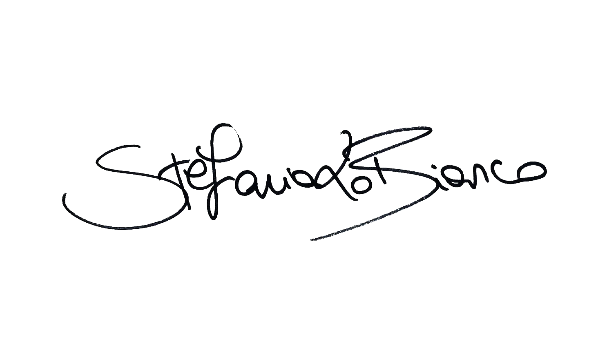

Currently, I'm working for an Arabic Cultural Institution (Egyptian Academy in Rome). It's been several years since I immersed myself in this international environment, where I found good inspiration for my projects and many different people with whom to deal with various aspects. Here, I am responsible for creating and developing our institutional magazine, which serves as a sponsor for all of our activities. Through my efforts, I have successfully rebuilt the magazine's design and layout to better align with the preferences of the readership. In addition, I have crafted each activity's graphic line. Although I have yet to gain much professional experience in UX/UI design, I am enthusiastic about learning and improving my skills in this area. I am involved in several personal projects that allow me to apply my knowledge and enhance my abilities. My eagerness for this field and my commitment to continuous growth motivate me to strive for excellence and succeed. Previously, I worked for Walk In - Advertising and Marketing Agency. Through my time at this agency, I have gained significant professional and personal growth, allowing me to advance confidently. I have created some impressive work, including advertising banners for an Art Gallery in Rome published on il Messaggero. Additionally, I collaborated on designing the institutional brochure for FRIMM Group and some of their company logos. In addition, I enjoyed a team designing promotional material for RoadHouse and Warner Bros, Polli, and Coccolino. I began my academic education at La Sapienza University, where I pursued a degree in industrial design. During my time there, I had the opportunity to work on a project for a Portuguese start-up, where I was able to create their brand identity. This project was significant to me as it was the first time I had made something worthwhile, and it proved to be a successful challenge. Then, I took time to deepen the art printing techniques, like linocut and editorial practices, after immersing myself in the intensive ArtLab program, which focused on the languages of graphic art. Finally, I understood the significance of conducting extensive research and comprehending the project to produce an outstanding and engaging result. During these years, I began building my professional experience by working briefly with Umana Creative Studio. While there, I focused on creating logos, designing flyers, and even delved into illustration work. I seek fresh opportunities and challenges to aid my growth and offer stimulating professional experiences. My ultimate goal is to obtain a role that will enable me to direct all of my energy and passion toward achieving success.
